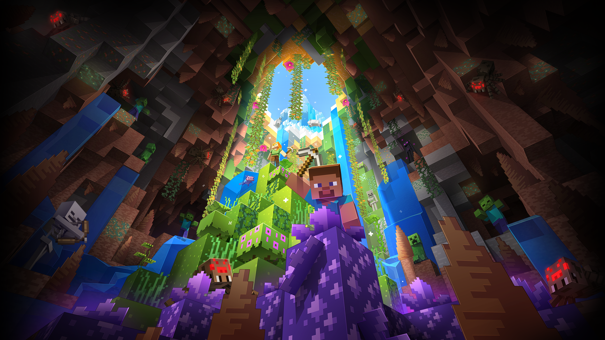
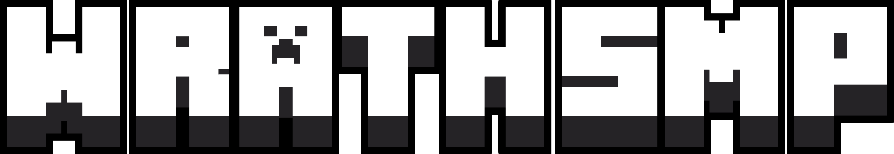

Um servidor que experimenta trazer mecânicas e funções de um jogo MMORPG para o Minecraft SMP.
Raças, níveis, economia e um mundo maior para explorar — tudo dentro do Minecraft.
O que esperar deste servidor?
O WrathSMP mantém a liberdade de um SMP e adiciona camadas de progressão inspiradas em RPG. Você escolhe sua raça, evolui suas habilidades e participa de uma economia movida pelos jogadores.
- Raças temáticas: inspirações de Dungeons & Dragons, Senhor dos Anéis e Warcraft.
- Progressão: níveis de jornada, combate e profissões com o famoso McMMO.
- Economia: esmeraldas com mercado, leilão e sistema de encomenda de itens.
- Mundo ampliado: novas estruturas, masmorras e lugares para explorar.
- E mais! Confira as perguntas frequentes e as versões suportadas.
Como entrar
- Escolha sua edição de Minecraft: Java ou Bedrock. Os IPs estão no cabeçalho.
- Abra a lista de servidores no jogo e clique em Adicionar servidor.
- Cole o IP correspondente à sua edição e salve.
- Selecione o servidor na lista e clique em Entrar no servidor.
- Pronto! Não é preciso instalar mods: plugins e resourcepacks são gerenciados pelo servidor.
Perguntas frequentes
Preciso instalar mods?
Não, o servidor apenas utiliza plugins e resourcepacks, tudo é gerenciado pelo servidor. É só entrar e jogar!
Onde encontro os IPs?
No cabeçalho da página, ao lado do logotipo. É só clicar no IP para copiar.
Posso jogar no celular ou no console?
Sim. Use o IP Bedrock listado no cabeçalho e entre pela edição Bedrock do Minecraft.